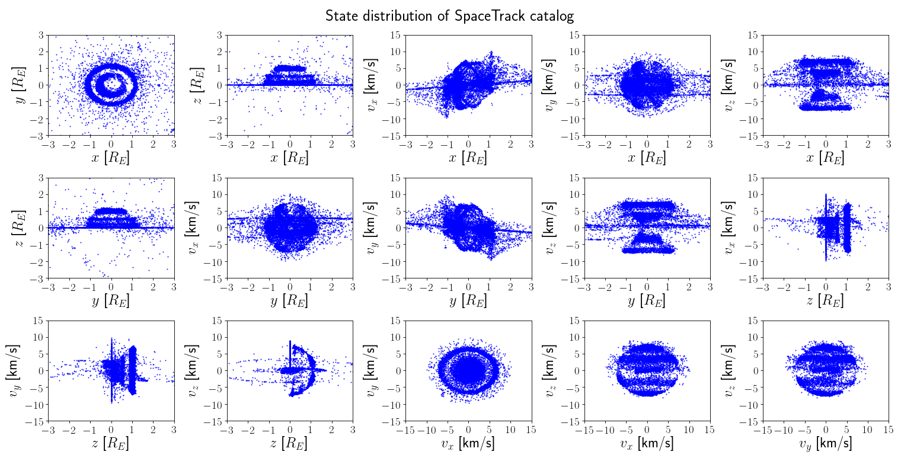
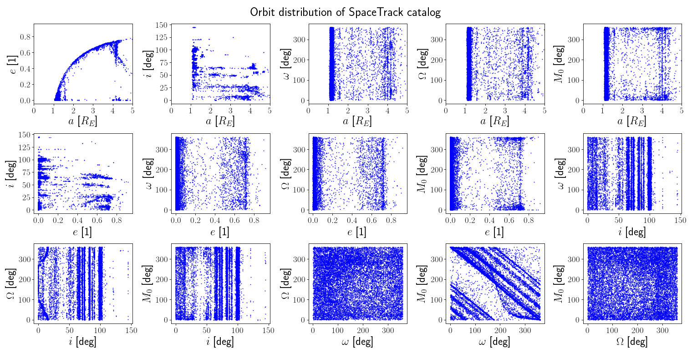
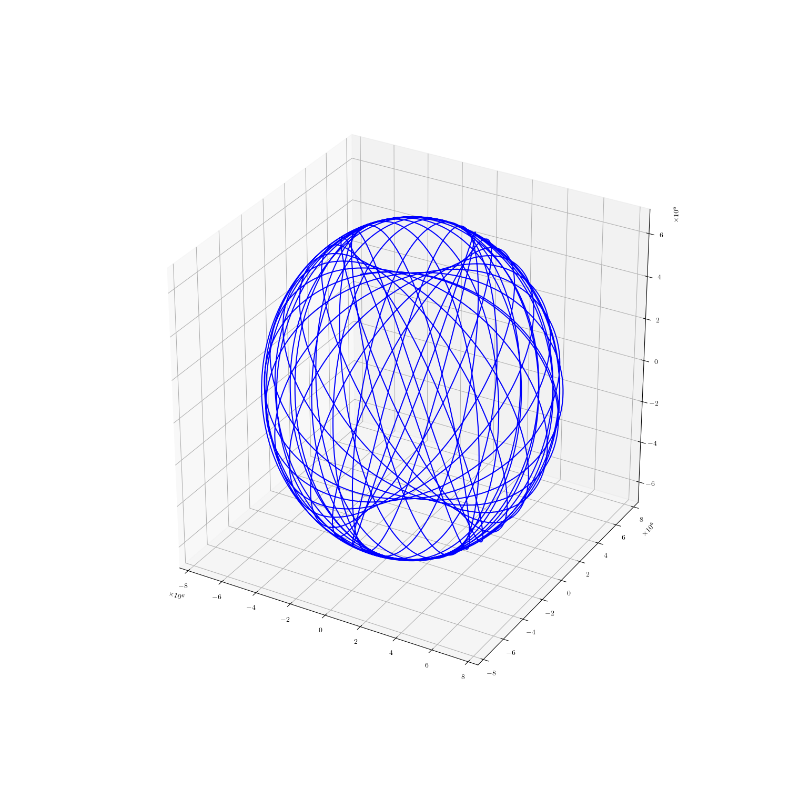

Note
Click here to download the full example code
Loading a TLE catalog (e.g. spacetrack)¶



Out:
oid a e i mjd0 m d BSTAR
----- ----------- ---------- ------- ------- ----------- -------- -------
5 8.62529e+06 0.185229 34.2637 59099.3 8.30609e+10 3165.75 0
11 8.12965e+06 0.147491 32.8827 59100 2.0944 0.2 0
12 8.32326e+06 0.166034 32.9126 59099.9 1.1739e+10 1649 0
16 8.82132e+06 0.201469 34.282 59099.7 1.59826e+13 18276.5 0
20 8.2694e+06 0.167131 33.3587 59099.5 1.58019e+10 1820.74 0
22 6.96617e+06 0.012802 50.3036 59099.9 1.38467e+12 8087.1 0
29 7.03155e+06 0.00130333 48.398 59099.8 1.32167e+13 17154.7 0
45 7.16368e+06 0.0252182 66.7081 59099.9 1.00264e+13 15645.6 0
46 7.11232e+06 0.021404 66.7043 59099.9 1.71486e+12 8684.67 0
47 7.13579e+06 0.0223744 66.6787 59099.8 6.36882e+12 13449.2 0
Orbit of satnum: 329
a : 7.3867e+06 x : 2.8596e+06
e : 5.7751e-01 y : -2.0020e+06
i : 6.8867e+01 z : 6.5599e+06
omega: 3.4308e+02 vx: 7.0105e+03
Omega: 1.9159e+02 vy: 6.7702e+02
anom : 5.7506e+01 vz: 1.9273e+03
Space object 1: <Time object: scale='utc' format='mjd' value=59100.22859376995>:
('1 329U 61015DF 20252.22859377 -.00000018 00000-0 63745-4 0 9990', '2 329 66.7785 271.2226 0119721 314.2276 118.4865 13.65287519942659')
Parameters: d=3398.118, C_D=2.300, A=1.000, m=102726828682.234, C_R=1.000
/home/danielk/venvs/sorts/lib/python3.7/site-packages/astropy/coordinates/builtin_frames/utils.py:76: AstropyWarning: (some) times are outside of range covered by IERS table. Assuming UT1-UTC=0 for coordinate transformations.
warnings.warn(msg.format(ierserr.args[0]), AstropyWarning)
/home/danielk/venvs/sorts/lib/python3.7/site-packages/astropy/coordinates/builtin_frames/utils.py:62: AstropyWarning: Tried to get polar motions for times after IERS data is valid. Defaulting to polar motion from the 50-yr mean for those. This may affect precision at the 10s of arcsec level
warnings.warn(wmsg, AstropyWarning)
import pathlib
import matplotlib.pyplot as plt
import numpy as np
import sorts
from sorts import plotting
from sorts.population import tle_catalog
try:
pth = pathlib.Path(__file__).parent / 'data' / 'space_track_tle.txt'
except NameError:
import os
pth = 'data' + os.path.sep + 'space_track_tle.txt'
pop = tle_catalog(pth, kepler=True)
print(pop.print(n=slice(None,10), fields = ['oid','a','e','i','mjd0', 'm', 'd', 'BSTAR']))
plotting.orbits(
pop.get_fields(['x','y','z','vx','vy','vz'], named=False),
title = "State distribution of SpaceTrack catalog",
axis_labels = 'earth-state',
limits = [(-3,3)]*3 + [(-15,15)]*3,
)
plotting.orbits(
pop.get_fields(['a','e','i','aop','raan','mu0'], named=False),
title = "Orbit distribution of SpaceTrack catalog",
axis_labels = 'earth-orbit',
limits = [(0, 5)] + [(None, None)]*5,
)
#look at kepler elements
orbit = pop.get_orbit(n=101, fields = ['x','y','z','vx','vy','vz', 'm'])
print(f'\n Orbit of satnum: {pop["oid"][101]} \n{str(orbit)}\n')
#we can also create a space object
obj = pop.get_object(n=101)
print(obj)
#lets get ITRS states
obj.propagator.set(out_frame='ITRS')
t = np.linspace(0,3600*24.0*2,num=5000)
states = obj.get_state(t)
fig = plt.figure(figsize=(15,15))
ax = fig.add_subplot(111, projection='3d')
ax.plot(states[0,:], states[1,:], states[2,:],"-b")
plt.show()
Total running time of the script: ( 0 minutes 20.494 seconds)